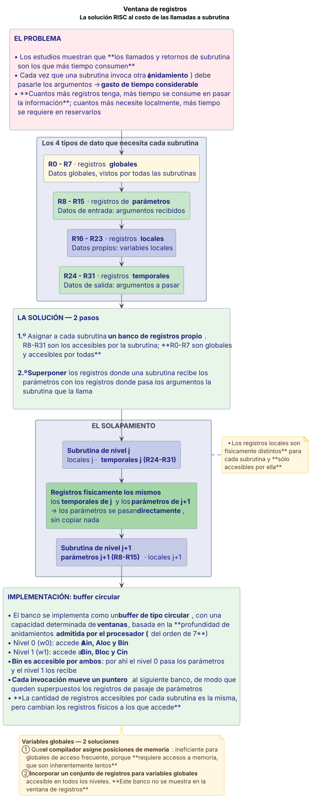

RISC vs CISC¶
Definición¶
CISC — Complex Instruction Set Computer. El modelo de procesador "convencional", con repertorio de instrucciones complejo. Sus bases de diseño:
- Repertorios de instrucciones grandes.
- Formato de instrucción complejo y de longitud variable.
- Muchos modos de direccionamiento.
- Capacidad de implementar sentencias de HLL con muy pocas instrucciones de máquina. Esta idea consiste básicamente en resolver una sentencia de HLL "por hardware".
RISC — Reduced Instruction Set Computer. Un nuevo enfoque sobre el diseño de procesadores, al que condujeron los estudios realizados sobre el comportamiento de los programas. Sus características relevantes originales:
- Repertorio de instrucciones reducido y básico.
- Formato de instrucción fijo y sencillo: todas las instrucciones tienen la misma cantidad de bits o bytes.
- Unidad de control "cableada" (no microprogramada).
- Diseño del cauce optimizado para ejecutar 1 instrucción por ciclo (uso preciso de la segmentación).
- Máquina tipo LOAD-STORE: acceso a memoria sólo con instrucciones de movimiento de datos; instrucciones aritméticas y lógicas sólo entre registros.
- Uso intensivo de registros de uso general, con optimización por software.
Los principales referentes de este enfoque fueron Patterson y Hennessy (Arquitectura de computadoras — Un enfoque estructurado). Conceptualmente, los primeros procesadores RISC surgieron a mediados de los 80 en las universidades de Berkeley (David Patterson, proyecto RISC 1) y Stanford (John Hennessy, proyecto MIPS-XMP).
Fuente: Teorías/06 Arq clase6 RISC.pdf, fil. 8, 20–21.
Desarrollo¶
Hitos en la evolución de los sistemas de cómputo¶
| Hito | Descripción |
|---|---|
| Familia de computadoras | Introducido por IBM a partir de su modelo System/360 en 1964, basado en la disponibilidad de un conjunto de máquinas con una arquitectura común y prestaciones variables de acuerdo a las necesidades |
| Arquitectura e implementación | 2 conceptos separados que introdujo DEC en su máquina PDP-8, referidos a las características visibles al programador y las prestaciones del sistema |
| Unidad de control microprogramada | Idea propuesta por Wilkes en 1951 para el desarrollo sistemático de las unidades de control, e introducida por IBM en la línea S/360 en 1964 |
| Memoria caché | Pequeña memoria de alta velocidad para balancear la capacidad de la CPU y la velocidad de transferencia de la MP. Introducida en 1968 en la IBM S/360 Modelo 85 |
| Memoria de estado sólido | Desarrollo, en 1970, de memorias semiconductoras en reemplazo de las memorias magnéticas, lentas y complicadas de manejar |
| Microprocesador | En 1971 aparece el primero, fabricado por Intel: el i4004 |
| Segmentación de cauce | Introduce el paralelismo en la naturaleza secuencial de los programas |
| Procesadores múltiples | Sistemas con múltiples procesadores para aumentar la potencia de cómputo |
| Procesadores RISC | Diseño conceptualmente opuesto a los procesadores CISC |
Cómo se llegó al CISC: el GAP semántico¶
El desarrollo de la tecnología de circuitos integrados de muy alta escala de integración (VHSI) permitió incorporar cada vez más funcionalidades dentro de un chip. La incorporación de nuevas funcionalidades se orientó principalmente a mejorar la eficiencia en la ejecución de programas, y un aspecto de esa mejora consistió en brindar mayor soporte a los lenguajes de alto nivel (HLL), sobre todo los más complejos.
Dar mayor soporte a los HLL tiende a facilitar el proceso de compilación —y también el trabajo de elaboración de compiladores—, sobre todo considerando que el costo del software es típicamente mucho más caro que el hardware.
GAP semántico
La "distancia" entre un HLL y el lenguaje de máquina se denomina GAP semántico, y básicamente es la relación entre la cantidad de sentencias de un programa en HLL y la cantidad de instrucciones de máquina que se requieren para resolverlo.
El mayor soporte tiende a reducir el GAP semántico, agregando instrucciones de máquina más complejas que resuelvan las sentencias del HLL más directamente.
Los estudios sobre el comportamiento de los programas¶
Con el uso masivo de la tecnología VHSI y el desarrollo de procesadores CISC, se empezaron a realizar estudios sobre el comportamiento de los procesadores tipo CISC, orientados a 3 aspectos:
- Uso del repertorio de instrucciones. Determinar el uso de las instrucciones y, por lo tanto, su interacción con la memoria.
- Uso de los operandos. Determinar cuáles eran los tipos de datos usados y su frecuencia de uso.
- Secuencia de ejecución de instrucciones. Determinar el impacto de disponer de un repertorio largo y complejo en la Unidad de Control —que debe resolver las instrucciones— y en el cauce de datos, que tiene relación con la eficiencia en la ejecución de una secuencia de instrucciones.
Se realizaron de 2 maneras distintas:
| Estáticos | Dinámicos | |
|---|---|---|
| Qué computan | Cantidades basadas en el código objeto ejecutable | Cantidades en base a la ejecución de diferentes programas, típicamente programas de prueba o benchmarks |
| Ventaja | Forma sencilla de obtener métricas | Más realistas: los resultados tienen en cuenta la situación real por la que pasan los procesadores |
| Problema | No tienen en cuenta el flujo del programa ejecutado y pueden resultar bastante equivocados. Ej.: la cantidad de instrucciones que componen un lazo no tiene nada que ver con las veces que se ejecuta | — |
Estudio sobre el uso de instrucciones¶
Se efectuó sobre VAX, PDP-11 y MC68000. Las operaciones se dividieron en: asignación (movimiento de datos, aritméticas y lógicas), sentencias condicionales (IF, LOOP), sentencias incondicionales (GOTO), llamadas y retornos de subrutinas (CALL) y otras.
| Aparición dinámica Pascal |
Aparición dinámica C |
Instruc. máquina (pond.) Pascal |
Instruc. máquina (pond.) C |
Refs. a memoria (pond.) Pascal |
Refs. a memoria (pond.) C |
|
|---|---|---|---|---|---|---|
| Assign | 45 | 38 | 13 | 13 | 14 | 15 |
| Loop | 5 | 3 | 42 | 32 | 33 | 26 |
| Call | 15 | 12 | 31 | 33 | 44 | 45 |
| If | 29 | 43 | 11 | 21 | 7 | 13 |
| GoTo | — | 3 | — | — | — | — |
| Otras | 6 | 1 | 3 | 1 | 2 | 1 |
Cómo se leen las 3 mediciones:
- Aparición dinámica: cuenta la cantidad de sentencias del HLL ejecutadas.
- Instrucciones de máquina: computa las instrucciones de máquina para las sentencias del HLL, ponderadas al tiempo de ejecución de las mismas.
- Referencias a memoria: computa la cantidad de accesos a memoria.
Qué se aprecia del estudio:
- Las sentencias de asignación son las más numerosas, seguidas por las de llamadas a procedimientos y las sentencias condicionales (1.ª columna).
- Ponderando por cantidad de instrucciones de máquina, las sentencias condicionales y llamadas a procedimientos son las que requieren más instrucciones de máquina (2.ª columna).
- Ponderando por cantidad de accesos a memoria, siguen predominando las sentencias condicionales y llamadas a procedimiento (3.ª columna).
Los accesos a memoria tienen mucho impacto en el tiempo de ejecución del programa. Por lo tanto, los llamados a procedimiento consumen mucho tiempo y tiene que hacerse lo más eficiente posible para optimizar los accesos a memoria.
Estudios sobre llamadas a procedimientos¶
- En un alto porcentaje (> 98 %) se pasan menos de 6 datos.
- En un alto porcentaje (> 92 %) la cantidad de variables locales es menor a 6.
- En general el nivel de anidamiento es menor a 7.
Conclusiones:
- La mayoría de los programas tienen una secuencia corta de llamadas seguida por la secuencia de retornos.
- La mayoría de las variables son locales.
- Las referencias a operandos están muy localizadas.
Estudios sobre uso de operandos¶
| Pascal | C | Promedio | |
|---|---|---|---|
| Constantes enteras | 16 | 23 | 20 |
| Variables escalares | 58 | 53 | 55 |
| Matrices/estructuras | 26 | 24 | 25 |
Además, en otros estudios se observó:
- Uso de variables locales (80 %) del procedimiento.
- Uso de punteros del tipo variable local y escalar para manejo de estructuras de datos.
- Uso intensivo de registros (no reflejado en este estudio).
Conclusiones finales de los estudios¶
- Optimización: se necesita optimizar el tiempo de ejecución de las instrucciones más usadas y las que consumen más tiempo.
- Simplificación: de las instrucciones, para resolverlas más rápidamente.
- Ajuste: del cauce de datos para resolver las instrucciones más usadas lo más rápido posible.
- Registros: usar los registros en forma intensiva para manejo de operandos. Disponer de un banco de registros significativo para reducir los accesos a memoria.
Registros en procesadores RISC¶
Un aspecto esencial de los procesadores RISC es disponer de un banco de registros amplio, para reducir los accesos a memoria y simplificar las instrucciones. La optimización del banco de registros se puede hacer de 2 maneras:
- Por hardware: agregando más registros.
- Por software: optimizando la asignación de registros a las variables que se usen más en un período de tiempo dado.
Tener un banco de registros amplio tiene ventajas y desventajas:
| Ventajas | Desventajas |
|---|---|
| Reducción de accesos a memoria | Más bits en la instrucción para identificar el registro |
| Disponibilidad para más variables escalares locales | En llamadas y retornos de subrutina se requiere tiempo para pasar parámetros, asignar espacio para las variables locales y devolver los resultados |
La ventana de registros¶
Por los estudios realizados, los llamados y retornos de subrutina son los que más tiempo consumen. Por lo tanto es necesario hacer muy eficiente el manejo de este tipo de instrucciones.
Los estudios permiten inferir que, en general: las subrutinas usan pocas variables locales, cada llamada recibe y pasa pocos argumentos, y las subrutinas usan pocas variables globales.
Cada subrutina necesita 4 tipos de datos, y cada uno requiere su banco de registros:
| Tipo de dato | Banco de registros | Ejemplo (8 variables por tipo) |
|---|---|---|
| Datos globales (vistos por todas las subrutinas) | Registros globales | R0–R7 |
| Datos de entrada (argumentos de entrada) | Registros de parámetros | R8–R15 |
| Datos propios (variables locales) | Registros locales | R16–R23 |
| Datos de salida (para pasar argumentos) | Registros temporales | R24–R31 |
Si cada subrutina administra "su" banco de registros —el que le "pertenece", excepto los globales que son comunes a todos—, la cantidad real de registros de cada subrutina se limita a un número no excesivamente grande (24 en el ejemplo) y por lo tanto requiere pocos bits para identificarlo (5 bits).
Los problemas que aparecen con el uso de subrutinas:
- Cada vez que una subrutina invoca otra subrutina (anidamiento) debe pasarle los argumentos, lo que produce un gasto de tiempo considerable.
- Cuantos más registros tenga la subrutina, más tiempo se consume en pasar la información.
- Cuantos más registros necesite localmente, más tiempo se requiere en reservarlos.
La solución: la ventana de registros. Consiste en:
1.º Asignar a cada subrutina un banco de registros propio. Por ejemplo, los registros R8 a R31 son los accesibles por la subrutina; los R0 a R7 son globales y accesibles por todas las subrutinas.
2.º Superponer los registros donde recibe los parámetros una subrutina con los registros donde pasa los argumentos la subrutina que la llama. Es decir:
- La subrutina de nivel j+1 recibe los parámetros de la subrutina de nivel j en los registros R8 a R15.
- La subrutina de nivel j le pasa los parámetros a la de nivel j+1 en los registros R24 a R31.
- Entonces, si se solapan los registros R24 a R31 de la subrutina j con los R8 a R15 de la j+1, se pueden pasar los parámetros directamente entre la subrutina j y la j+1 a través del mismo grupo de registros (físico).
Los registros temporarios del nivel j y los registros de parámetros del nivel j+1 son físicamente los mismos. En cambio, los registros locales son físicamente distintos para cada subrutina y sólo accesibles por ella.
De esta manera, cada subrutina accede a una ventana de registros, de los cuales los primeros y los últimos están solapados (superpuestos), y son usados para pasaje de parámetros.
Implementación con buffer circular. El banco de registros se implementa como un buffer de tipo circular, con una capacidad determinada de "ventanas", basada en la "profundidad" de anidamientos admitidas por el procesador —basada en los estudios antes analizados, podría ser del orden de 7—.
En el esquema de la teoría:
- En el nivel 0 (w0), los registros accesibles son Ain, Aloc y Bin.
- En el nivel 1 (w1), los registros accesibles son Bin, Bloc y Cin.
- Los registros Bin son accesibles por la rutina de nivel 0 —por donde pasa los parámetros— y la rutina de nivel 1 —por donde los recibe—.
- Cada invocación de una subrutina mueve un puntero que apunta al siguiente banco de registros. El movimiento del puntero es tal que quedan superpuestos los registros usados para pasaje de parámetros.
- La cantidad de registros accesibles por cada subrutina es la misma, pero cambian los registros físicos a los que accede.
Variables globales. Para el manejo de variables globales —compartidas por todas las subrutinas— hay 2 soluciones:
- Que el compilador asigne posiciones de memoria a las variables: es algo ineficiente para variables globales a las que se accede frecuentemente, porque requiere accesos a memoria que son inherentemente lentos.
- Incorporar en el procesador un conjunto de registros para variables globales accesible en todos los niveles. Este banco de registros no está mostrado en la ventana de registros.
Optimización por software¶
También se pueden mejorar las prestaciones en los RISC optimizando el uso de los registros. Pero los lenguajes HLL no tienen referencias explícitas a los registros: como la asignación de registros se hace en la compilación, el uso optimizado de registros es responsabilidad del compilador, no del programador.
Las estrategias de optimización tratan de asignar los pocos registros a las variables más usadas o las que más tiempo permanecerán en el registro.
Estrategia de los registros virtuales:
- Suponer que se dispone de infinitos registros ("virtuales"). A cada variable del programa se le asigna un registro virtual (que son ilimitados).
- El compilador mapea el número ilimitado de registros simbólicos a un número fijo de registros reales.
- Los registros simbólicos que no se solapan pueden compartir el registro real. Si se agotan los registros reales, algunas de las variables se asignan a posiciones de memoria.
- En la optimización se usa una técnica denominada "coloreado de grafos".
Características relevantes de los procesadores RISC (resumen)¶
- Formatos de instrucción sencillos (fijo).
- Modos de direccionamiento sencillos.
- Diseño de la Unidad de Control del tipo "cableado" (sin microcódigo).
- Operaciones registro a registro.
- Instrucciones a memoria únicamente LOAD y STORE.
- Una instrucción por ciclo (segmentación eficiente).
- Típicamente máquinas tipo Harvard.
- Mayor tiempo/esfuerzo de compilación.
Fuente: Teorías/06 Arq clase6 RISC.pdf, fil. 3–5, 6–8, 9–11, 12–19, 24–25, 26–38, 40–41, 42.
Diagrama¶
La ventana de registros¶

Fuente: Teorías/06 Arq clase6 RISC.pdf, fil. 26–38.
Ventajas y desventajas o comparaciones¶
Comparación general RISC vs. CISC¶
| Aspecto | CISC | RISC |
|---|---|---|
| Repertorio de instrucciones | Muchas más instrucciones | Reducido y básico |
| Tamaño de instrucción | Muy variable | Fija |
| Modos de direccionamiento | Buena variedad | Mínimos |
| Banco de registros | Más limitado | Amplio |
| Memoria de control | Típicamente microprogramada | Lógica "cableada" |
| Acceso a memoria | Instrucciones variadas | Sólo LOAD y STORE |
| Objetivo del cauce | — | 1 instrucción por ciclo |
Ventajas y desventajas de los procesadores CISC¶
| Detalle | |
|---|---|
| ✅ Ventaja | El compilador es más sencillo por disponer de un repertorio amplio de instrucciones y modos de direccionamiento |
| ❌ Desventaja | Las instrucciones de máquina complejas son difíciles de aprovechar por el compilador: es decir, las usa poco o nada |
| ❌ Desventaja | La optimización es más difícil de realizar |
| ✅ Ventaja | Los programas son más pequeños, tienen menos instrucciones, lo que probablemente implique que ocupan menos memoria. Sin embargo, la memoria hoy día es muy barata, por lo que esta ventaja es muy relativa |
| ⚠️ Matiz | El número de bits de memoria que ocupa no tiene por qué ser más pequeño al tener menos instrucciones |
| ❌ Desventaja | Al tener un repertorio más amplio, los campos de código de operación son más largos y aumentan el tamaño de la instrucción |
| ✅ A favor | Las referencias a registros necesitan menos bits |
Velocidad de ejecución: ¿más complejidad = más velocidad?¶
El objetivo principal en el desarrollo de los procesadores es mejorar la velocidad de ejecución de los programas, y se supone que aumentar la complejidad del procesador debería mejorar su velocidad. Pero:
- Los procesadores CISC casi no usan las instrucciones más complejas.
- El repertorio complejo exige una Unidad de Control más compleja y lenta. En particular, la memoria de control (microprogramada) es muy grande y "lenta".
- Una UC más lenta aumenta el tiempo de ejecución de las instrucciones simples: es decir, penaliza las instrucciones que podrían hacerse más rápido.
En definitiva, no está comprobado que la tendencia hacia CISC fuera la apropiada.
Por qué es difícil comparar RISC y CISC¶
Se han realizado numerosas mediciones comparativas, pero las comparaciones tienen varios problemas:
- No existe un par de máquinas RISC y CISC directamente comparables.
- No hay un conjunto de programas de prueba definitivo.
- En los análisis, es muy difícil separar los efectos del hardware de los del compilador.
- En muchos casos las comparaciones se realizan usando prototipos o simulaciones en un "ambiente" controlado, y pocas veces con productos comerciales.
- La mayoría de las máquinas son una mezcla de ambas.
Además hay que definir qué parámetros se van a medir. Las evaluaciones pueden ser:
- Cuantitativas: básicamente comparando el tamaño de los programas y su velocidad de ejecución.
- Cualitativas: revisión de soporte de lenguajes de alto nivel y uso óptimo de los recursos VLSI.
Conclusiones de la teoría
- No existe una marcada diferencia de performance entre uno y otro.
- No está clara la barrera que separa uno u otro estilo.
- Muchos diseños incluyen características de ambos criterios, por ejemplo PowerPC y Pentium II.
Ventana de registros vs. memoria caché¶
| Banco de registros amplio | Caché |
|---|---|
| Todos los datos son escalares y locales | Datos escalares locales recientemente usados |
| Acceso individual a variables | Acceso a bloques de memoria |
| Variables globales asignadas por el compilador | Variables locales y globales usadas recientemente |
| Salvaguarda/restauración basadas en la profundidad de anidamiento | Salvaguarda/restauración basadas en el algoritmo de reemplazo |
| Direccionamiento de registro | Direccionamiento de memoria |
Ver la ficha de memoria caché.
Fuente: Teorías/06 Arq clase6 RISC.pdf, fil. 23, 39, 44–45, 46–47, 48–49.
Ejemplo del curso¶
El nanoMIPS como RISC¶
El procesador de referencia del curso, el nanoMIPS, es un modelo de procesador simplificado basado en el procesador MIPS, que es un procesador comercial tipo RISC. Cumple con las características del enfoque RISC: instrucciones de tamaño fijo (32 bits), formato regular, máquina tipo LOAD/STORE, aritmética sólo registro a registro, memorias de instrucciones y datos separadas (tipo Harvard) y cauce diseñado para 1 instrucción por ciclo.
Ver la ficha de segmentación de cauce.
Procesadores RISC comerciales¶
| Generación | Año | Reloj | Arquitectura |
|---|---|---|---|
| SPARC (1.ª) | Comercializado desde 1987 | 16 a 50 MHz | Diseño de tipo escalar |
| SUPER SPARC (2.ª) | Liberada en 1992 | 33 a 50 MHz | Superescalar |
| ULTRA SPARC (3.ª) | Liberada a mediados de 1996 | 250 a 300 MHz | Superescalar de 4 etapas y de 64 bits, con 5 unidades de coma flotante |
Introducido en 1988. Tenía memorias de datos e instrucciones separadas —como el nanoMIPS— y un ancho de bus de 32 bits.
- PA-RISC: Hewlett Packard
- PowerPC: Apple, Motorola e IBM (Power Macintosh)
- MIPS
El MIPS64 del simulador WinMIPS64¶
El anexo de la clase 6 describe el MIPS64 que implementa el simulador WinMIPS64, un RISC real donde se ven las características del enfoque:
- 32 registros de uso general (r0..r31, 64 bits), excepto r0 que es siempre igual a 0.
- 32 registros de punto flotante (f0..f31, 64 bits).
- 2³⁰ palabras de memoria (32 bits cada una).
- Instrucciones de 1 palabra de longitud (32 bits) — formato fijo.
- Acceso a memoria limitado a 2 instrucciones: LOAD y STORE — máquina LOAD/STORE.
Segmentación en el MIPS — 5 etapas, con las unidades de punto flotante —FP Multiplier, FP Adder, FP-DIV— en paralelo dentro de la etapa EX:
| Etapa | Qué hace |
|---|---|
| IF — búsqueda | Se accede a memoria por la instrucción · se incrementa el PC |
| ID — decodificación / búsqueda de operandos | Se decodifica la instrucción · se accede al banco de registros por los operandos · se calcula el valor del operando inmediato con extensión de signo, si hace falta · si es un salto, se calcula el destino y si se toma o no |
| EX — ejecución / dirección efectiva | Si es de proceso, se ejecuta en la ALU · si es acceso a memoria, se calcula la dirección efectiva · si es un salto, se almacena el nuevo PC |
| MEM — acceso a memoria / terminación del salto | Si es un acceso a memoria, se accede |
| WB — almacenamiento | Se almacena el resultado, si lo hay, en el banco de registros |
Llamadas a procedimientos. El MIPS no tiene pila de hardware: almacena la
dirección de retorno siempre en R31. El salto a subrutina es JAL dir-de-salto
(R31 = PC; J dir-de-salto) y el retorno es JR R31 (PC = R31).
Ver von Neumann y pila.
Fuente: Teorías/06 Arq clase6 RISC.pdf, fil. 50–52; Teorías/04 Arq clase4 Segmentación de cauce.pdf, fil. 4–6 y Teorías/6 anexo clase 06 sobre_winmips.pdf, fil. 2–4, 22.
Preguntas de final sobre este tema¶
:material-help-box: Ver el banco de preguntas de RISC vs CISC
Fuentes citadas¶
Teorías/06 Arq clase6 RISC.pdf— 53 filminas. Fuente primaria del tema.Teorías/04 Arq clase4 Segmentación de cauce.pdf— fil. 4–6, para la caracterización del nanoMIPS como RISC.Teorías/6 anexo clase 06 sobre_winmips.pdf— 29 filminas, del simulador WinMIPS64. Se citan fil. 2–4 (características del MIPS64 y sus 5 etapas de segmentación) y fil. 22 (llamadas a procedimientos sin pila de hardware).
Qué se dejó afuera del anexo de WinMIPS64
El grueso del anexo (fil. 5–21, 23–29) es material de assembly y del simulador: directivas del ensamblador, E/S mapeada en memoria, repertorio de instrucciones, formatos de campo, rangos de salto, nombres convencionales de registros y 3 programas de ejemplo. El final no toma assembly, así que no se transcribe acá.
Referencias que da la propia cátedra (fil. 53): Organización y Arquitectura de Computadoras, William Stallings, capítulo 12, 5.ª ed.; Diseño y evaluación de arquitecturas de computadoras, M. Beltrán y A. Guzmán, capítulo 1, 1.ª ed.; Arquitectura de computadores — Un enfoque estructurado, Hennessy y Patterson.